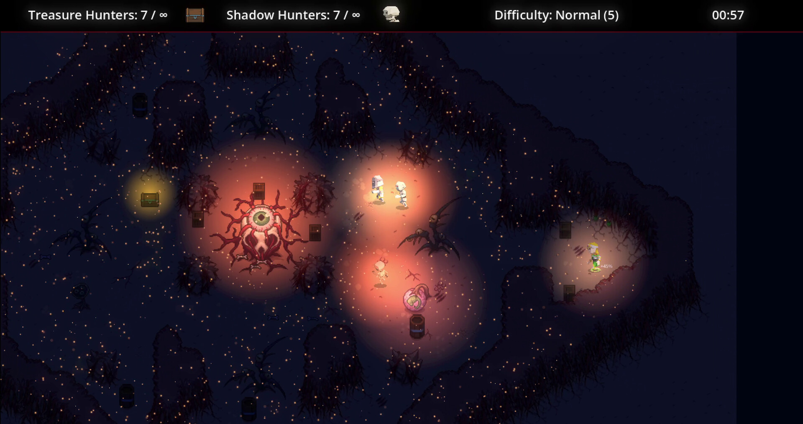
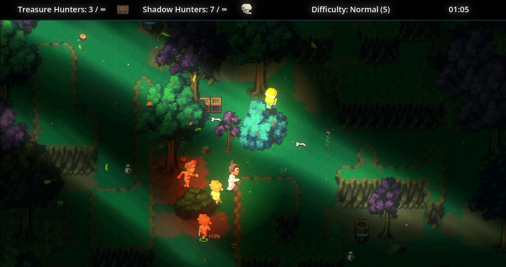
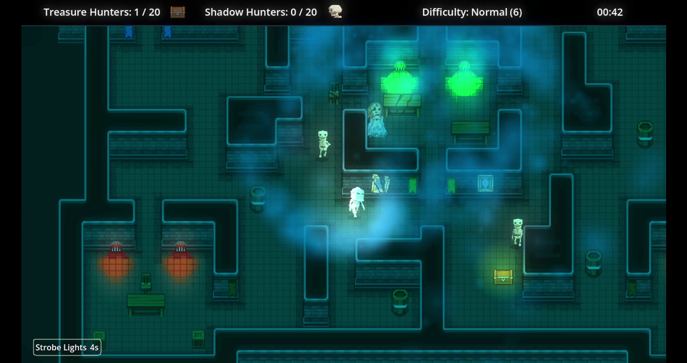
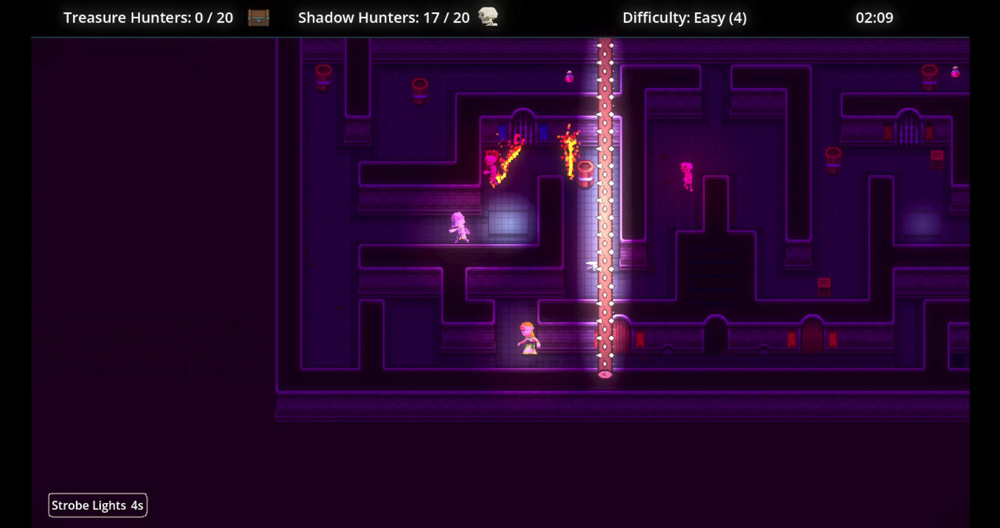

Play solo or mix local and online multiplayer in co-op and competitive matches.

Light. Loot. Pursuit.
A fast-paced, family-friendly party game where Treasure Hunters race for glowing chests while Shadow Hunters chase them through the dark.
Every hunt plays differently.
Hybrid procedural generation reshapes familiar themes into thousands of maze-like variations.
Potions, interactive scenery, dynamic AI, and sudden reversals keep every short round lively.
See you in the dark.



